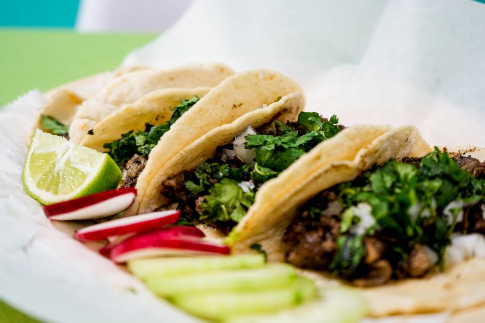

About LTS
LTS was founded in 2022. Our shop was built from the love of tacos🌮🌮🌮. We hope our shop adds a unique and interesting place to our Little town.

LTS was founded in 2022. Our shop was built from the love of tacos🌮🌮🌮. We hope our shop adds a unique and interesting place to our Little town.